<div class="container">
  <div id="contents" class="col-md-12 main-content"><h1 xmlns="http://www.w3.org/1999/xhtml" id="toc-id-29">Transformasie meetkunde</h1>

    <p xmlns="http://www.w3.org/1999/xhtml" class="Body-opener-no-indent">In Graad 8 het jy geleer hoe om translasies, refleksies en rotasies op ʼn koördinaatvlak te
beskryf. In sulke transformasies is die oorspronklike figuur en sy beeld altyd kongruent. In
hierdie graad gaan jy in fyner besonderhede die veranderinge in die koördinate van die
oorspronklike figure en hulle beelde in verskillende refleksies en translasies verken.
</p>

    <p xmlns="http://www.w3.org/1999/xhtml" class="Body-opener">Jy gaan ook hersiening doen oor hoe ʼn figuur vergroot of verklein word as sy sye met
dieselfde getal, wat die skaalfaktor genoem word, vermenigvuldig of gedeel word. Verder
gaan jy kyk hoe die skaalfaktor die oppervlakte en die omtrek van ʼn beeld beïnvloed. In
vergrotings en verkleinings is die ooreenstemmende sye van die oorspronklike figuur en sy
beeld in proporsie, m.a.w. die figure is gelykvormig. Jy sal ook vergrotings en verkleinings
van figure op die koördinaatvlak doen en die koördinate van die hoekpunte van sulke
figure ondersoek.
</p>


    <h2 xmlns="http://www.w3.org/1999/xhtml" id="toc-id-30">Stip punte op ʼn koördinaatstelsel</h2>

    <div xmlns="http://www.w3.org/1999/xhtml" class="note">
      <p class="Body-content-no-indent">ʼn Reghoekige koördinaatstelsel word <b>Cartesiese koördinaatvlak</b>  ook ʼn  
   genoem. Dit bestaan uit ʼn 
     horisontale x-as en ʼn vertikale y-as. </p>

 
    
	<p>Die interseksie van die asse word die 
<b>oorsprong</b> genoem en 
verteenwoordig die punt (0; 0). 
 </p>

	<p> Enige punt kan op ʼn
koördinaatstelsel voorgestel word
deur ʼn x-waarde en ʼn y-waarde te
gebruik. Hierdie getalle word
<b>koördinate</b> genoem en beskryf die posisie van die
punt met betrekking tot die twee asse.
</p>

    </div>

    <div xmlns="http://www.w3.org/1999/xhtml" class="frame-23">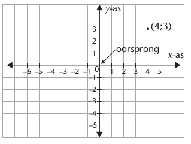</div>

    <p xmlns="http://www.w3.org/1999/xhtml" class="Body-no-indent">Die koördinate word in ʼn spesifieke volgorde geskryf:
:</p>

    <p xmlns="http://www.w3.org/1999/xhtml" class="Body">Die horisontale afstand vanaf die oorsprong
(x-koördinaat) word eerste geskryf.
</p>


    <p xmlns="http://www.w3.org/1999/xhtml" class="Body">Die vertikale afstand vanaf die oorsprong
(y-koördinaat) word tweede geskryf.
</p>

    <p xmlns="http://www.w3.org/1999/xhtml" class="Body"> Hierdie getalle, wat ʼn geordende getallepaar
genoem word, word deur ʼn kommapunt (;) geskei
en in hakies geskryf. Hier is ʼn voorbeeld van ʼn
geordende getallepaar: (4; 3) (sien die
koördinaatstelsel hier bo).
</p>

    <p xmlns="http://www.w3.org/1999/xhtml" class="Body"> Die
 \(x\)-as en
 \(y\)-as verdeel die koördinaatstelsel
in vier kwadrante. Die diagram regs wys hoe die
kwadrante genommer word en ook of die \(x\)- en
\(y-koördinate\) in elke kwadrant negatief of positief is.
</p>
   <div xmlns="http://www.w3.org/1999/xhtml" class="frame-23">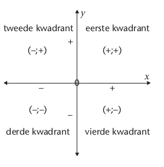</div>
    <p xmlns="http://www.w3.org/1999/xhtml" class="Body-investigation">1.In watter kwadrant sal die volgende punte gestip word?
</p>

    <p xmlns="http://www.w3.org/1999/xhtml" class="ques-a--2-space-below">(a) (-4; 1) </p><hr xmlns="http://www.w3.org/1999/xhtml"/><p xmlns="http://www.w3.org/1999/xhtml" class="ques-a--2-space-below">(b) (-1; -5)  </p><hr xmlns="http://www.w3.org/1999/xhtml"/><p xmlns="http://www.w3.org/1999/xhtml"> (c) (4;
    -3) </p><hr xmlns="http://www.w3.org/1999/xhtml"/><p xmlns="http://www.w3.org/1999/xhtml"> (d) (5;
    2) </p><hr xmlns="http://www.w3.org/1999/xhtml"/><p xmlns="http://www.w3.org/1999/xhtml" class="Body-investigation para-style-override-1">2. Stip die punte in vraag 1 op die koördinaatstelsel hier bo.
</p>

    <p xmlns="http://www.w3.org/1999/xhtml" class="Body-no-indent">Wanneer ʼn punt geskuif word na ʼn ander posisie op die koördinaatstelsel, word die
nuwe posisie die beeld van die punt genoem. Die priemsimbool (') word gebruik om ʼn
beeld aan te dui. Byvoorbeeld, die beeld van A is A' (lees as “A priem"). As A se koördinate
(x; y) genoem word, kan A' se koördinate (x'; y') genoem word.
</p>

    <p xmlns="http://www.w3.org/1999/xhtml" class="Body">Ons skryf
 A → A' en
 \((x; y) →(x'; y')\) om aan te dui dat A afgebeeld word op
 A'.</p>


    <h2 xmlns="http://www.w3.org/1999/xhtml" id="toc-id-31">Refleksie (omklap)</h2>

    <div xmlns="http://www.w3.org/1999/xhtml" class="note">   

      <p class="Body-content-no-indent">Die <b>spieëlbeeld</b> of <b>refleksie</b>van ʼn punt
verskyn aan die anderkant van die <b>lyn van
refleksie</b> (refleksielyn).</p>
    </div>

    <div xmlns="http://www.w3.org/1999/xhtml" class="aside">
      <p class="Body-box-no-indent">Om “ʼn punt in die \(x\)-as te
reflekteer" beteken dat die \(x\)-as
die lyn van refleksie is.
</p>
    </div>

    <p xmlns="http://www.w3.org/1999/xhtml" class="Body-no-indent">Die oorspronklike punt en sy refleksie is ewe ver van
die refleksielyn en die lyn wat die punt en sy beeld verbind is loodreg tot die
lyn van refleksie.
</p>

    <p xmlns="http://www.w3.org/1999/xhtml" class="Body">Enige lyn op die koördinaatstelsel kan ʼn lyn van refleksie wees. Dit sluit die
 \(x\)-as, die \(y\)-as en
 die lyn
 \(y = x\) in.</p>

    <h3 xmlns="http://www.w3.org/1999/xhtml" class="Head-investigation">Reflekteer punte in die (\(x\)-as, \(y\)-as en die lyn \(y =x\)</h3>

    <p xmlns="http://www.w3.org/1999/xhtml" class="Body-investigation">1.Die geordende getallepare
 A(5; 4) en
 B(-3;
    -2) word op ʼn koördinaatstelsel gestip.
</p>

    <p xmlns="http://www.w3.org/1999/xhtml" class="ques-a-">(a) Reflekteer punte
 A en
 B in die

    \(x\)-as en
 skryf die koördinate van die beelde neer.
</p>

    <p xmlns="http://www.w3.org/1999/xhtml" class="ques-a-">(b) Reflekteer punte A en B in die

    \(y\)-as en
 skryf die koördinate van die beelde neer.
</p>

    <p xmlns="http://www.w3.org/1999/xhtml" class="ques-a-">(c) Vergelyk die koördinate van die oorspronklike punte met dié van hulle beelde. 		
Wat merk jy op?
 </p><hr xmlns="http://www.w3.org/1999/xhtml"/><div xmlns="http://www.w3.org/1999/xhtml" class="frame-23">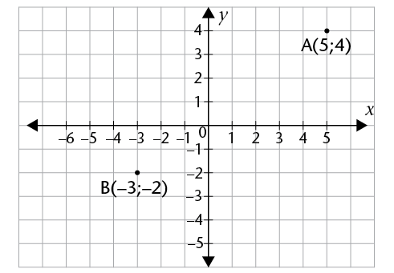</div>
    <hr xmlns="http://www.w3.org/1999/xhtml"/>
    
    <p xmlns="http://www.w3.org/1999/xhtml" class="Body-investigation"><span class="x2nd-level-bullet">2. Skryf die koördinate van die beelde van die volgende gereflekteerde punte neer.
</span></p>

    <table xmlns="http://www.w3.org/1999/xhtml" id="table-100" class="No-Table-Style table-style-override-1"><tbody><tr class="Row-Column-21"><td class="cell-style-override-2">
            <p class="Table-header-centred"><b>Punt
</b></p>
          </td>

          <td class="cell-style-override-2">
            <p class="Table-header-centred"><b>Refleksie in die
 \(x\)-as</b></p>
          </td>

          <td class="cell-style-override-2">
            <p class="Table-header-centred"><b>Refleksie in die
\(y\)-as</b></p>
          </td>
        </tr><tr class="Row-Column-314"><td class="cell-style-override-2">
            <p class="Table-text-centred">(-131; 24)</p>
          </td>

          <td class="cell-style-override-2">
            
          </td>

          <td class="cell-style-override-2">
            
          </td>
        </tr><tr class="Row-Column-314"><td class="cell-style-override-2">
            <p class="Table-text-centred">(-459; -795)</p>
          </td>

          <td class="cell-style-override-2">
            
          </td>

          <td class="cell-style-override-2">
            
          </td>
        </tr><tr class="Row-Column-314"><td class="cell-style-override-2">
            <p class="Table-text-centred"> \((x;y)\)</p>
          </td>

          <td class="cell-style-override-2">
            
          </td>

          <td class="cell-style-override-2">
            
          </td>
        </tr></tbody></table><p xmlns="http://www.w3.org/1999/xhtml" class="Body-investigation-hanging">3. Die punte
 J(-1; 5),
    K(-2; -4) en
 L(1; -2) word op die koördinaatstelsel gestip.
K' is die refleksie van punt K in die lyn
 \(y = x\). Dit beteken dat die lyn

    \(y = x\) die
refleksielyn is.
</p>

    <p xmlns="http://www.w3.org/1999/xhtml" class="ques-a-">(a) Reflekteer J en L in die lyn
 \(y = x\).</p>

    <div xmlns="http://www.w3.org/1999/xhtml" class="frame-23">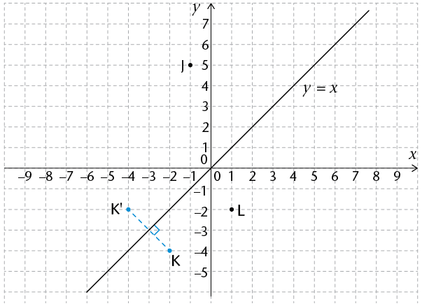</div>

    <p xmlns="http://www.w3.org/1999/xhtml" class="ques-a-">(b) Skryf die koördinate van die
	
beelde van die punte neer.
 </p><hr xmlns="http://www.w3.org/1999/xhtml"/><p xmlns="http://www.w3.org/1999/xhtml" class="ques-a-">(c) Wat merk jy op van die
	
koördinate van die beelde
van die punte in (b) hier bo?
 </p><hr xmlns="http://www.w3.org/1999/xhtml"/><p xmlns="http://www.w3.org/1999/xhtml" class="ques-a-">(d) Gebruik jou waarnemings in
	
(c) hier bo om die tabel te voltooi.
</p>

    <table xmlns="http://www.w3.org/1999/xhtml" id="table-101" class="No-Table-Style table-style-override-1"><tbody><tr class="Row-Column-357"><td class="cell-style-override-2">
            <p class="Table-header-centred"><b>Punt
</b></p>
          </td>

          <td class="cell-style-override-2">
            <p class="Table-header-centred"><b>Koördinate van die beeld van die
punt soos gereflekteer in
 \(y =
            x\)</b></p>
          </td>
        </tr><tr class="Row-Column-314"><td class="cell-style-override-2">
            <p class="Table-text-centred">(-1 001; -402)</p>
          </td>

          <td class="cell-style-override-2">

          </td>
        </tr><tr class="Row-Column-314"><td class="cell-style-override-2">
            <p class="Table-text-centred">(459; -795)</p>
          </td>

          <td class="cell-style-override-2">
            
          </td>
        </tr><tr class="Row-Column-314"><td class="cell-style-override-2">
            <p class="Table-text-centred">(-342; 31)</p>
          </td>

          <td class="cell-style-override-2">
            
          </td>
        </tr><tr class="Row-Column-314"><td class="cell-style-override-2">
            <p class="Table-text-centred">(21; 67)</p>
          </td>

          <td class="cell-style-override-2">
            
          </td>
        </tr><tr class="Row-Column-314"><td class="cell-style-override-2">
            <p class="Table-text-centred">(x; y)</p>
          </td>

          <td class="cell-style-override-2">
            
          </td>
        </tr></tbody></table><p xmlns="http://www.w3.org/1999/xhtml" class="Body-no-indent">Die volgende behoort uit die vorige aktiwiteit duidelik te wees:
</p>

    <ul xmlns="http://www.w3.org/1999/xhtml"><li class="Body-bullet-Left-indent"> Vir ʼn refleksie in die
 \(y\)-as, verander die \(x\)-koördinaat se teken en die
\(y\)-koördinaat bly dieselfde:

     \((x;y)\) →
      \((-x; y)\) of
      \(x' = -x\) en
 \(y' = y\), byvoorbeeld:
 (-3;
      4)→ (3;
      4)</li>

      <li class="Body-bullet-Left-indent"> Vir ʼn refleksie in die \(x\)-as, verander die \(y\)-koördinaat se teken en die
\(x\)-koördinaat bly dieselfde:

      (x; \(y\)) →
      (x; -\(y\)) or \(x' = x\) en
 \(y' = -y\), byvoorbeeld:

      (<span>-</span>3; 4) → (-3;
      -4)</li>

      <li class="Body-bullet-Left-indent"> Vir ʼn refleksie in die lyn \(y = x\), ruil die waardes van die \(x\)- en \(y\)-koördinate om:
 (x;
      \(y\)) →
      (\(y\); x) of \(x' = y\) en
 \(y' = x\), byvoorbeeld:
 (-3; 4)
      → (4;
      -3).</li>
    </ul><p xmlns="http://www.w3.org/1999/xhtml" class="Body-investigation">4. Ondersoek die effek van ʼn refleksie in die lyn
 \(y= -x\) op die koördinate van ʼn punt.
 </p><hr xmlns="http://www.w3.org/1999/xhtml"/>
    
    <p xmlns="http://www.w3.org/1999/xhtml" class="Body-investigation-hanging">5. A is die punt 
 (5;
    -2).Gee die koördinate van die refleksies van A as die punt
gereflekteer word in:
</p>

    <p xmlns="http://www.w3.org/1999/xhtml" class="ques-a-">(a) die  
 \(y\)-as  </p> <hr xmlns="http://www.w3.org/1999/xhtml"/><p xmlns="http://www.w3.org/1999/xhtml">(b) die lyn
 \(y= -x\) </p>

    <hr xmlns="http://www.w3.org/1999/xhtml"/>

    <p xmlns="http://www.w3.org/1999/xhtml" class="ques-a-">(c) die lyn
 \(y = x\) </p><hr xmlns="http://www.w3.org/1999/xhtml"/><p xmlns="http://www.w3.org/1999/xhtml">(d) the \(x\)-as</p>

    <hr xmlns="http://www.w3.org/1999/xhtml"/>

    <h3 xmlns="http://www.w3.org/1999/xhtml" class="Head-investigation">Refleksie van meetkundige figure</h3>

    <p xmlns="http://www.w3.org/1999/xhtml" class="Body-no-indent">Dieselfde beginsels as hier bo is van toepassing as meetkundige figure gereflekteer word.
</p>

    <p xmlns="http://www.w3.org/1999/xhtml" class="ques-a-">1. (a) Reflekteer 
\(\triangle PQR\) in die

    \(x\)-as, in die

    \(y\)-as en in die lyn
 \(y =
    x\) op die koördinaatstelsel 	
	
(reflekteer eers die hoekpunte en verbind die gereflekteerde punte dan).
</p>

    <p xmlns="http://www.w3.org/1999/xhtml" class="Body"><span>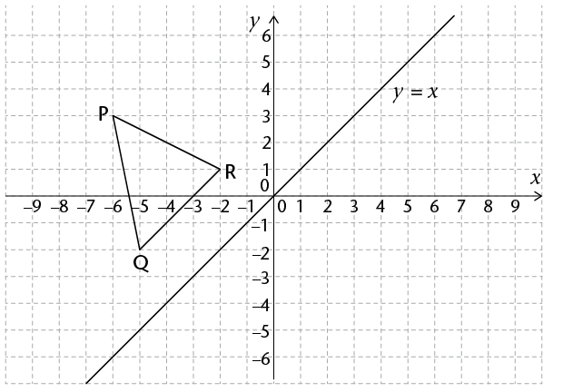</span> </p>

    <p xmlns="http://www.w3.org/1999/xhtml" class="ques-a-">(b) Kyk na jou voltooide refleksies in vraag 1(a) en skryf die koördinate van die
	
beeldpunte in die tabel:
</p>

    <table xmlns="http://www.w3.org/1999/xhtml" id="table-102" class="No-Table-Style table-style-override-1"><tbody><tr class="Row-Column-253"><td>
            <p class="Table-header-centred"><b>Hoekpunte van
driehoek
</b></p>
          </td>

          <td>
            <p class="Table-header-centred"><b>Refleksie in die
 \(x\)-as</b></p>
          </td>

          <td>
            <p class="Table-header-centred"><b>Refleksie in die
 \(y\)-as</b></p>
          </td>

          <td>
            <p class="Table-header-centred"><b>Refleksie in die

            \(y
            = x\)</b></p>
          </td>
        </tr><tr class="Row-Column-314"><td>
            <p class="Table-text-centred">P(-6; 3)</p>
          </td>

          <td>
            
          </td>

          <td>
            
          </td>

          <td>
            
          </td>
        </tr><tr class="Row-Column-314"><td>
            <p class="Table-text-centred">Q(-5; -2)</p>
          </td>

          <td>
            
          </td>

          <td>
            
          </td>

          <td>
            
          </td>
        </tr><tr class="Row-Column-314"><td>
            <p class="Table-text-centred">R(-2; 1)</p>
          </td>

          <td>
            
          </td>

          <td>
            
          </td>

          <td>
            
          </td>
        </tr></tbody></table><p xmlns="http://www.w3.org/1999/xhtml" class="ques-a-">(c) Wat merk jy op van
\(\triangle PQR\),
   \(\triangle P'Q'R'\),\(\triangle P''Q''R''\) en
\(\triangle P'''Q'''R'''\)? </p><hr xmlns="http://www.w3.org/1999/xhtml"/><p xmlns="http://www.w3.org/1999/xhtml" class="Body-investigation">2. Reflekteer
 \(\triangle DEF\) in die

    \(x\)-as, in die 

    \(y\)-as en in die lyn 
 \(y = x\).</p>


    <p xmlns="http://www.w3.org/1999/xhtml" class="Normal para-style-override-3"><span class="char-style-override-32"><span>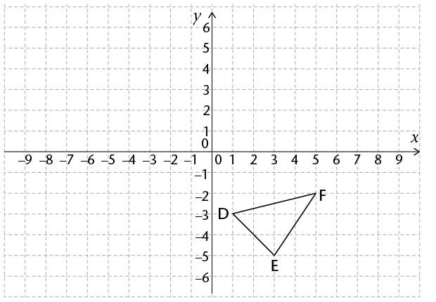</span></span></p>

    <p xmlns="http://www.w3.org/1999/xhtml" class="Body-investigation-hanging">3. ʼn Vierhoek het die volgende hoekpunte: 
 A(1; 4), B(-6; 1), C(-2; -1) en
 D(7;
    2). Sonder om werklik die refleksies uit te voer, skryf die koördinate van die hoekpunte
van die beeld neer as die vierhoek:
</p>

    <p xmlns="http://www.w3.org/1999/xhtml" class="ques-a-">(a) gereflekteer word in die
 \(x\)-as </p><hr xmlns="http://www.w3.org/1999/xhtml"/><p xmlns="http://www.w3.org/1999/xhtml" class="ques-a-">(b) gereflekteer word
 \(y\)-as </p><hr xmlns="http://www.w3.org/1999/xhtml"/><p xmlns="http://www.w3.org/1999/xhtml" class="ques-a-">(c) gereflekteer word
 \(y = x\)</p><hr xmlns="http://www.w3.org/1999/xhtml"/>


    <p xmlns="http://www.w3.org/1999/xhtml" class="Body-investigation">4. Sê in elke geval in watter lyn die punt gereflekteer is:
</p>

    <p xmlns="http://www.w3.org/1999/xhtml" class="ques-a--2-space-below">(a) (-4; 5) → (-4;
    -5) </p><hr xmlns="http://www.w3.org/1999/xhtml"/><p xmlns="http://www.w3.org/1999/xhtml" class="ques-a--2-space-below">(b) (2; -3) → (-2;
    -3) </p><hr xmlns="http://www.w3.org/1999/xhtml"/><p xmlns="http://www.w3.org/1999/xhtml" class="ques-a--2-space-below">(c) (-13; -3) → (-3;
    -13) </p><hr xmlns="http://www.w3.org/1999/xhtml"/><p xmlns="http://www.w3.org/1999/xhtml" class="ques-a--2-space-below">(d) (1; 16) → (16;
    1) </p><hr xmlns="http://www.w3.org/1999/xhtml"/><p xmlns="http://www.w3.org/1999/xhtml" class="ques-a--2-space-below">(e) (12; -8) → (-12;
    -8) </p><hr xmlns="http://www.w3.org/1999/xhtml"/><p xmlns="http://www.w3.org/1999/xhtml" class="ques-a--2-space-below">(f) (-7; -5) → (-5;
    -7) </p><hr xmlns="http://www.w3.org/1999/xhtml"/><p xmlns="http://www.w3.org/1999/xhtml" class="ques-a--2-space-below">(g) (2; -3) → (-2;
    -3) </p><hr xmlns="http://www.w3.org/1999/xhtml"/>
    <h2 xmlns="http://www.w3.org/1999/xhtml" id="toc-id-32">Translasie (skuif)</h2>

    <p xmlns="http://www.w3.org/1999/xhtml" class="Body-no-indent">Onthou: ʼn Translasie van ʼn punt of meetkundige figuur op ʼn koördinaatstelsel beteken
dat die punt in ʼn vertikale rigting, ʼn horisontale rigting, of in beide vertikale en
horisontale rigtings beweeg of skuif.
</p>

    <h3 xmlns="http://www.w3.org/1999/xhtml">Skuif punte horisontaal of vertikaal op ʼn koördinaatstelsel</h3>

    <p xmlns="http://www.w3.org/1999/xhtml" class="Body-investigation">1. Punte R en W is op ʼn
	 koördinaatstelsel gestip.
</p>

    <div xmlns="http://www.w3.org/1999/xhtml" class="frame-23">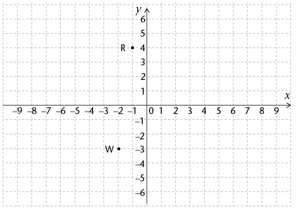</div>

    <p xmlns="http://www.w3.org/1999/xhtml" class="ques-a-">(a) Stip die beeld van punt R
	
na die volgende skuiwe:
</p>

    <ul xmlns="http://www.w3.org/1999/xhtml"><li class="Body-bullet-after--a-"> 5 eenhede regs
</li>

      <li class="Body-bullet-after--a-"> 5 eenhede links
</li>

      <li class="Body-bullet-after--a-"> 2 eenhede opwaarts
</li>

      <li class="Body-bullet-after--a-"> 2 eenhede afwaarts
</li>
    </ul><p xmlns="http://www.w3.org/1999/xhtml" class="ques-a-">(b) Stip die beeld van punt W
	
na ʼn skuif van:
</p>

    <ul xmlns="http://www.w3.org/1999/xhtml"><li class="Body-bullet-after--a-"> 4 eenhede regs
</li>

      <li class="Body-bullet-after--a-"> 4 eenhede links
</li>

      <li class="Body-bullet-after--a-"> 3 eenhede opwaarts
</li>

      <li class="Body-bullet-after--a-"> 3 eenhede afwaarts
</li>
    </ul><p xmlns="http://www.w3.org/1999/xhtml" class="ques-a-">(c) Kyk na jou voltooide translasies in (a) en (b) op die vorige bladsy. Voltooi nou
	
die tabel deur die koördinate van die oorspronklike punte en hulle beelde na
	
elke translasie neer te skryf.
</p>

    <table xmlns="http://www.w3.org/1999/xhtml" id="table-103" class="No-Table-Style table-style-override-1"><tbody><tr class="Row-Column-314"><td class="cell-style-override-2">
            <p class="Table-text-left">Koördinate van oorspronklike punte
</p>
          </td>

          <td class="cell-style-override-2">
            <p class="Table-text-centred para-style-override-19">
            <b>R(-1; 4)</b></p>
          </td>

          <td class="cell-style-override-2">
            <p class="Table-text-centred para-style-override-19">
            <b>W(-2; -3)</b></p>
          </td>
        </tr><tr class="Row-Column-314"><td class="cell-style-override-2">
            <p class="Table-text-left">Koördinate van beeld na ʼn skuif na <b>regs</b>
</p>
          </td>

          <td class="cell-style-override-2">
            
          </td>

          <td class="cell-style-override-2">
            
          </td>
        </tr><tr class="Row-Column-314"><td class="cell-style-override-2">
            <p class="Table-text-left">Koördinate van beeld na ʼn skuif na 
<b>links</b></p>
          </td>

          <td class="cell-style-override-2">
            
          </td>

          <td class="cell-style-override-2">
            
          </td>
        </tr><tr class="Row-Column-314"><td class="cell-style-override-2">
            <p class="Table-text-left">Koördinate van beeld na ʼn skuif 
<b>opwaarts
</b></p>
          </td>

          <td class="cell-style-override-2">
            
          </td>

          <td class="cell-style-override-2">
            
          </td>
        </tr><tr class="Row-Column-314"><td class="cell-style-override-2">
            <p class="Table-text-left">Koördinate van beeld na ʼn skuif
 <b>afwaarts
</b></p>
          </td>

          <td class="cell-style-override-2">
            
          </td>

          <td class="cell-style-override-2">
            
          </td>
        </tr></tbody></table><p xmlns="http://www.w3.org/1999/xhtml" class="ques-a-">(d) Kyk na die voltooide tabel in (c). Kies die regte antwoorde hier onder om elke
	
stelling waar te maak:
</p>

    <ul xmlns="http://www.w3.org/1999/xhtml"><li class="Body-bullet-Left-indent para-style-override-40">
      ʼn Translasie na <b>regs of links</b> verander die
 (\(x\)-waarde
/\(y\)-waarde
)
      en die
 \(x\)-waarde
/\(y\)-waarde
)
     bly dieselfde.
</li>

      <li class="Body-bullet-Left-indent para-style-override-40">
       	ʼn Translasie
 <b>opwaarts of afwaarts 
</b>, verander die
 (\(x\)-waarde
/\(y\)-waarde
) en die

      (\(x\)-waarde
/\(y\)-waarde
) bly dieselfde.
</li>

      <li class="Body-bullet-Left-indent para-style-override-40">
       	 By ʼn translasie na
 <b>regs
</b>word die getal eenhede van die skuif by die
 \(x\)-waarde
(bygetel/afgetrek).
</li>

      <li class="Body-bullet-Left-indent para-style-override-40">
       	 By ʼn translasie na
 <b>links
</b> word die getal eenhede van die skuif by die
 \(x\)-waarde (bygetel/afgetrek).

</li>

      <li class="Body-bullet-Left-indent para-style-override-40">
        	By ʼn translasie
 <b>opwaarts
</b>,
      word die getal eenhede van die skuif by die

      \(y\)-waarde (bygetel/afgetrek).

</li>

      <li class="Body-bullet-Left-indent para-style-override-40">
       	 By ʼn translasie
 <b>afwaarts
</b>,
     word die getal eenhede van die skuif by die

      \(y\)-waarde (bygetel/afgetrek).
</li>
    </ul><p xmlns="http://www.w3.org/1999/xhtml" class="Body-investigation">2. Skryf die koördinate van elke beeld na die volgende translasies:
</p>

    <table xmlns="http://www.w3.org/1999/xhtml" id="table-104" class="No-Table-Style table-style-override-1"><tbody><tr class="Row-Column-357"><td class="cell-style-override-2">
            <p class="Table-header-centred"><b>Punt
</b></p>
          </td>

          <td class="cell-style-override-2">
            <p class="Table-header-centred"><b>3 eenhede regs
</b></p>
          </td>

          <td class="cell-style-override-2">
            <p class="Table-header-centred"><b>4 eenhede links
</b></p>
          </td>

          <td class="cell-style-override-2">
            <p class="Table-header-centred"><b>2 eenhede
opwaarts
</b></p>
          </td>

          <td class="cell-style-override-2">
            <p class="Table-header-centred"><b>5 eenhede
afwaarts
</b></p>
          </td>
        </tr><tr class="Row-Column-314"><td class="cell-style-override-2">
            <p class="Table-text-left">(3; 5)</p>
          </td>

          <td class="cell-style-override-2">
            
          </td>

          <td class="cell-style-override-2">
            
          </td>

          <td class="cell-style-override-2">
            
          </td>

          <td class="cell-style-override-2">
            
          </td>
        </tr><tr class="Row-Column-314"><td class="cell-style-override-2">
            <p class="Table-text-left">(-13; 42)</p>
          </td>

          <td class="cell-style-override-2">
            
          </td>

          <td class="cell-style-override-2">
            
          </td>

          <td class="cell-style-override-2">
            
          </td>

          <td class="cell-style-override-2">
            
          </td>
        </tr><tr class="Row-Column-314"><td class="cell-style-override-2">
            <p class="Table-text-left">(-59; -95)</p>
          </td>

          <td class="cell-style-override-2">
            
          </td>

          <td class="cell-style-override-2">
            
          </td>

          <td class="cell-style-override-2">
            
          </td>

          <td class="cell-style-override-2">
            
          </td>
        </tr><tr class="Row-Column-314"><td class="cell-style-override-2">
            <p class="Table-text-left">\((x;~ y)\)</p>
          </td>

          <td class="cell-style-override-2">
            
          </td>

          <td class="cell-style-override-2">
            
          </td>

          <td class="cell-style-override-2">
            
          </td>

          <td class="cell-style-override-2">
            
          </td>
        </tr></tbody></table><p xmlns="http://www.w3.org/1999/xhtml" class="Body-investigation">3. Skryf die koördinate van elke beeld na die volgende translasies:
</p>

    <table xmlns="http://www.w3.org/1999/xhtml" id="table-105" class="No-Table-Style table-style-override-1"><tbody><tr class="Row-Column-204"><td class="cell-style-override-2">
            <p class="Table-header-centred"><b>Punt
</b></p>
          </td>

          <td class="cell-style-override-2">
            <p class="Table-header-centred"><b>4 eenhede regs
en 3 eenhede
opwaarts
</b></p>
          </td>

          <td class="cell-style-override-2">
            <p class="Table-header-centred"><b>2 eenhede
links en
1 eenheid op
</b></p>
          </td>

          <td class="cell-style-override-2">
            <p class="Table-header-centred"><b>1 eenheid regs
en 5 eenhed
</b></p>
          </td>

          <td class="cell-style-override-2">
            <p class="Table-header-centred"><b>6 eenhede links
en 2 eenhede
afwaarts
</b></p>
          </td>
        </tr><tr class="Row-Column-314"><td class="cell-style-override-2">
            <p class="Table-text-left">(4; 2)</p>
          </td>

          <td class="cell-style-override-2">
            
          </td>

          <td class="cell-style-override-2">
            
          </td>

          <td class="cell-style-override-2">
            
          </td>

          <td class="cell-style-override-2">
            
          </td>
        </tr><tr class="Row-Column-314"><td class="cell-style-override-2">
            <p class="Table-text-left">(-32; 21)</p>
          </td>

          <td class="cell-style-override-2">
            
          </td>

          <td class="cell-style-override-2">
            
          </td>

          <td class="cell-style-override-2">
            
          </td>

          <td class="cell-style-override-2">
            
          </td>
        </tr><tr class="Row-Column-314"><td class="cell-style-override-2">
            <p class="Table-text-left">(-68; -57)</p>
          </td>

          <td class="cell-style-override-2">
            
          </td>

          <td class="cell-style-override-2">
            
          </td>

          <td class="cell-style-override-2">
            
          </td>

          <td class="cell-style-override-2">
            
          </td>
        </tr><tr class="Row-Column-314"><td class="cell-style-override-2">
            <p class="Table-text-left">\((x; ~y)\)</p>
          </td>

          <td class="cell-style-override-2">
            
          </td>

          <td class="cell-style-override-2">
            
          </td>

          <td class="cell-style-override-2">
            
          </td>

          <td class="cell-style-override-2">
            
          </td>
        </tr></tbody></table><p xmlns="http://www.w3.org/1999/xhtml" class="ques-a-">Jy kon die volgende uit die vorige aktiwiteit raakgesien het:
</p>

    <ul xmlns="http://www.w3.org/1999/xhtml"><li class="Body-bullet-Left-indent">Vir ʼn horisontale translasie deur die afstand
 \(p\), neem die 
 \(x\)-koördinaat met die
afstand
 \(p\) toe as die skuif na regs is, en neem met die afstand

      \(p\) af as die skuif na
links is. Ons skryf
 \(x' = x + p\), met \(p \gt 0\) vir ʼn skuif na regs en

 \(p \lt 0\) vir ʼn skuif na
links. Die
 \(y\)-koördinaat bly dieselfde, so
 \((x; y)\)
      →
      \((x + p; y)\).</li>

      <li class="Body-bullet-Left-indent"> Vir ʼn vertikale translasie deur die afstand 
 \(q\),neem die
 \(y\)-koördinaat toe met die
afstand
 \(q\) as die skuif opwaarts is, en neem af met die afstand
\(q\)as die skuif afwaarts
is. Ons skryf
 \(y' = y + q\), met \(q \gt 0\) vir ʼn vertikaal opwaartse translasie en

 \(q \lt 0\) vir ʼn
vertikaal afwaartse translasie. Die \(x\)-koördinaat bly dieselfde, so
 \((x;y)\)
      →
      \((x; y + q)\).</li>
    </ul><h3 xmlns="http://www.w3.org/1999/xhtml" class="Head-investigation">Translasie van meetkundige figure op ʼn koördinaatstelsel</h3>

    <p xmlns="http://www.w3.org/1999/xhtml" class="ques-a-">1. (a) Skuif
 \(\triangle PQR\) 5 eenhede na regs
	
en 3 eenhede af.
</p>

    <div xmlns="http://www.w3.org/1999/xhtml" class="frame-23">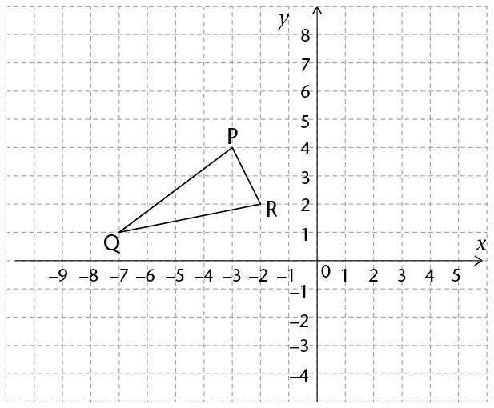</div>

    <p xmlns="http://www.w3.org/1999/xhtml" class="ques-a-">(b) Skuif 
\(\triangle PQR\) 2 eenhede
   na links en 3 eenhede op.</p>

    <p xmlns="http://www.w3.org/1999/xhtml" class="ques-a-">(c) Is al die driehoeke
  kongruent?
 </p><hr xmlns="http://www.w3.org/1999/xhtml"/><p xmlns="http://www.w3.org/1999/xhtml" class="ques-a--2-space-below">2. (a) Skuif
\(\triangle DEF\)
    4 eenhede links en 2 eenhede af.
</p>

    <p xmlns="http://www.w3.org/1999/xhtml" class="ques-a--2-space-below">(b) Skuif
\(\triangle DEF\) 3 eenhede regs en 4 eenhede op.
</p>

    <p xmlns="http://www.w3.org/1999/xhtml" class="ques-a-">(c) Is al die driehoeke kongruent?
 </p><hr xmlns="http://www.w3.org/1999/xhtml"/><p xmlns="http://www.w3.org/1999/xhtml" class="No-Paragraph-Style"><span>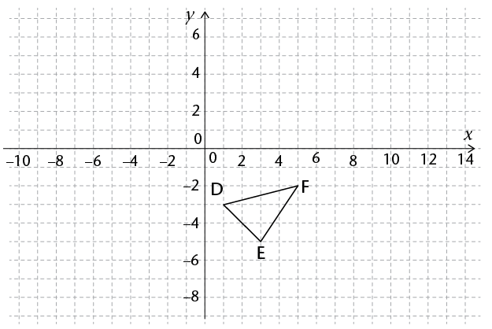</span></p>

    <p xmlns="http://www.w3.org/1999/xhtml" class="Body-investigation-hanging">3. Die hoeke van ʼn reghoek het die volgende koördinate: 
 K(-5; 2), L(-4;
    -2), M(1; -3) en
 N(4; 3). Maak die volgende skuiwe en skryf die koördinate van die beeld van die
vierhoek neer.
</p>

    <p xmlns="http://www.w3.org/1999/xhtml" class="ques-a-">(a) 7 eenhede regs en
 2 eenhede opwaarts
 </p><hr xmlns="http://www.w3.org/1999/xhtml"/><p xmlns="http://www.w3.org/1999/xhtml" class="ques-a-">(b) 5 eenhede regs en

 2 eenhede afwaarts
 </p><hr xmlns="http://www.w3.org/1999/xhtml"/><p xmlns="http://www.w3.org/1999/xhtml" class="ques-a-">(c) 4 eenhede regs en

 3 eenhede afwaarts
 </p><hr xmlns="http://www.w3.org/1999/xhtml"/><p xmlns="http://www.w3.org/1999/xhtml" class="ques-a-">(d) 2 eenhede links en

 7 eenhede opwaarts
 </p><hr xmlns="http://www.w3.org/1999/xhtml"/><p xmlns="http://www.w3.org/1999/xhtml" class="Body-investigation">4. Beskryf die translasies as die koördinate van die oorspronklike punt en die beeld die
	 volgende is:
</p>

    <p xmlns="http://www.w3.org/1999/xhtml" class="ques-a--2-space-below">(a) (-2; -3) → (-2;
    -5) </p><hr xmlns="http://www.w3.org/1999/xhtml"/><p xmlns="http://www.w3.org/1999/xhtml" class="ques-a--2-space-below">(b) (4; -7) → (-6;
    0) </p><hr xmlns="http://www.w3.org/1999/xhtml"/><p xmlns="http://www.w3.org/1999/xhtml" class="ques-a--2-space-below">(c) (3; 11) → (16;
    20) </p><hr xmlns="http://www.w3.org/1999/xhtml"/><p xmlns="http://www.w3.org/1999/xhtml" class="ques-a--2-space-below">(d) (-1; -2) → (5;
    -4) </p><hr xmlns="http://www.w3.org/1999/xhtml"/><p xmlns="http://www.w3.org/1999/xhtml" class="ques-a-">(e) (8; -11) → (-2;
    -3) </p><hr xmlns="http://www.w3.org/1999/xhtml"/><h2 xmlns="http://www.w3.org/1999/xhtml" id="toc-id-33">Vergroting (groei) en verkleining (krimp)</h2>

    <h3 xmlns="http://www.w3.org/1999/xhtml" class="Head-investigation-after-B-head">Wat is vergrotings en verkleinings?</h3>

    <p xmlns="http://www.w3.org/1999/xhtml" class="Body-no-indent">Jy sal die volgende uit die graad 8 werk onthou.
</p>

    <ul xmlns="http://www.w3.org/1999/xhtml"><li class="Body-bullet-Left-indent"> ʼn Beeld is ʼn vergroting of ʼn verkleining van die oorspronklike figuur slegs as al die
ooreenstemmende sye tussen die twee figure in

      <b>verhouding 
</b>is. Dit
beteken dat <i>al die sye </i> van die oorspronklike figuur deur dieselfde getal (die
 <b>skaalfaktor)
</b>) vermenigvuldig is om die beeld te skep.
</li>

      <li class="Body-bullet-Left-indent para-style-override-16">
        \(\text{Skaalfaktor
 }= \dfrac{\text{sylengte van beeld
}}{\text{lengte van ooreenstemmende sy van oorspronklike figuur
}}\)
      
<ul>
      <li class="Body-bullet-2nd-level para-style-override-43">
      
     As die skaalfaktor
 &gt; 1, is die beeld ʼn vergroting.
</li>

      <li class="Body-bullet-2nd-level para-style-override-43">
      
      As die skaalfaktor
 &lt; 1, is die beeld ʼn verkleining.
</li>
      </ul>
</li>
      <li class="Body-bullet-Left-indent"> Die oorspronklike figuur en sy vergrote en verkleinde beeld is

      <b>gelykvormig
</b>.</li>

      <li class="Body-bullet-Left-indent">Omtrek van beeld = Omtrek van oorspronklike figuur
 \(\times\) skaalfaktor
</li>

      <li class="Body-bullet-Left-indent"> Oppervlakte van beeld = Oppervlakte van oorspronklike figuur
 \(\times\) (skaalfaktor
)<sup>2</sup></li>
    </ul>
    <p xmlns="http://www.w3.org/1999/xhtml" class="Body-no-indent"><span>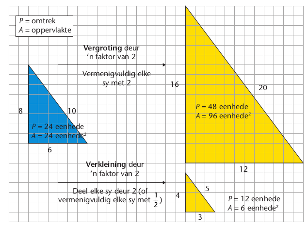</span> </p>

    <p xmlns="http://www.w3.org/1999/xhtml" class="Body-no-indent">Partykeer is die terminologie wat vir vergrotings en verkleinings gebruik word,
verwarrend. Maak seker dat jy die volgende voorbeelde verstaan. Raadpleeg die diagram
op die vorige bladsy:
</p>

    <p xmlns="http://www.w3.org/1999/xhtml" class="Body">"<b>Vergroot 
</b>ʼn figuur met ʼn skaalfaktor van 2" beteken:
</p>

    <ul xmlns="http://www.w3.org/1999/xhtml"><li class="Body-bullet-Left-indent para-style-override-16">
        <p>\(\dfrac{\text{sylengte van beeld
}}{\text{lengte van ooreenstemmende sy van oorspronklike figuur
}}= 2\)</p>
      </li>

      <li class="Body-bullet-Left-indent">Elke sy van die oorspronklike figuur moet met 2 
<i>vermenigvuldig 
</i> word.
</li>

      <li class="Body-bullet-Left-indent"> 	 Elke sy van die beeld sal 2 keer <em>langer</em> as die ooreenstemmende sy van die

oorspronklike figuur wees.
</li>

      <li class="Body-bullet-Left-indent"> 	 Die omtrek van die beeld sal 2 keer <em>langer</em> as die omtrek van die oorspronklike

figuur wees.
</li>

      <li class="Body-bullet-Left-indent">	 ie oppervlakte van die beeld sal
 \(2^2\) keer
 \((2 \times 2 = 4\) times)
      <i>groter
</i> as die oppervlakte

     van die oorspronklike figuur wees.
</li>
    </ul><p xmlns="http://www.w3.org/1999/xhtml" class="Body">"<b>Verklein
</b> ʼn figuur met ʼn skaalfaktor van of 2" beteken:
</p>

    <ul xmlns="http://www.w3.org/1999/xhtml"><li class="Body-bullet-Left-indent para-style-override-16">
   <p>\(\dfrac{\text{sylengte van beeld
}}{\text{lengte van ooreenstemmende sy van oorspronklike figuur
}}= 0,5\)</p>
      </li>

      <li class="Body-bullet-Left-indent">
         	 Elke sy van die oorspronklike figuur moet
 <i>vermenigvuldig 
</i> word met
\(\frac{1}{2}\)(of <i>gedeel
</i> word deur 2
).
      </li>

      <li class="Body-bullet-Left-indent">
        Elke sy van die beeld sal 2 keer
 <i>korter
</i> as sy ooreenstemmende sy in die oorspronklike figuur wees.


 

        <div class="aside">
          <p class="Body-box-no-indent">Let op dat die
           \(\frac{1}{2}\) vermenigvuldigings-
inverse van 2 is.
</p>
        </div>
      </li>

      <li class="Body-bullet-Left-indent"> Die omtrek van die beeld sal
<i>keer</i> korter as die omtrek van die oorspronklike
figuur wees.
</li>

      <li class="Body-bullet-Left-indent">
         Die oppervlakte van die beeld sal 
 \(2^2\) keer 
 \((2 \times 2 = 4\) kleiner 
) <i>kleiner
</i> as die
oppervlakte van die oorspronklike figuur wees. (Of oppervlakte van beeld 
 = (\( \frac{1}{2} )2 = \frac{1}{4}\) van die oppervlakte van die oorspronklike figuur.)

      </li>
    </ul><h3 xmlns="http://www.w3.org/1999/xhtml" class="Head-investigation">Oefen om met vergrotings en verkleinings te werk</h3>

    <p xmlns="http://www.w3.org/1999/xhtml" class="Body-investigation">1. Bereken die skaalfaktor van elke oorspronklike figuur en sy beeld.
</p>

    <p xmlns="http://www.w3.org/1999/xhtml" class="ques-a-">(a)</p>

    <p xmlns="http://www.w3.org/1999/xhtml" class="Normal para-style-override-44"><span>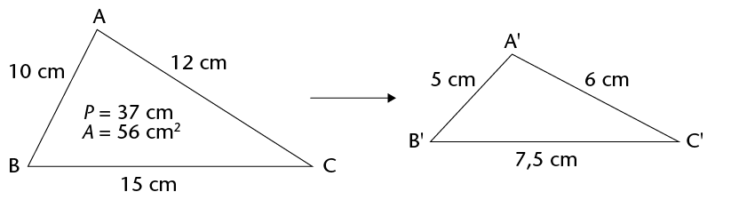</span>  </p><hr xmlns="http://www.w3.org/1999/xhtml"/><p xmlns="http://www.w3.org/1999/xhtml" class="ques-a-">(b)</p>

    <p xmlns="http://www.w3.org/1999/xhtml" class="Normal para-style-override-45"><span>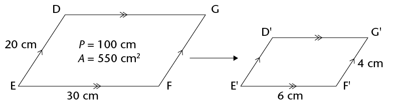</span>  </p><hr xmlns="http://www.w3.org/1999/xhtml"/><p xmlns="http://www.w3.org/1999/xhtml" class="ques-a-">(c)</p>

    <p xmlns="http://www.w3.org/1999/xhtml" class="Normal para-style-override-46"><span class="char-style-override-32"><span>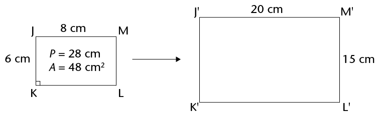</span></span> </p><hr xmlns="http://www.w3.org/1999/xhtml"/><p xmlns="http://www.w3.org/1999/xhtml" class="Body-investigation-hanging">2. Vir elke stel figure in vraag 1, skryf neer hoeveel keer die
 <i>omtrek
</i> van elke beeld groter
of kleiner as die omtrek van die oorspronklike figuur is. Skryf ook die omtrek van
elke beeld neer.
</p>

    <p xmlns="http://www.w3.org/1999/xhtml" class="ques-a--2-space-below para-style-override-16">(a) </p><hr xmlns="http://www.w3.org/1999/xhtml"/><p xmlns="http://www.w3.org/1999/xhtml" class="ques-a--2-space-below para-style-override-16">(b) </p><hr xmlns="http://www.w3.org/1999/xhtml"/><p xmlns="http://www.w3.org/1999/xhtml" class="ques-a--2-space-below">(c) </p><hr xmlns="http://www.w3.org/1999/xhtml"/><p xmlns="http://www.w3.org/1999/xhtml" class="Body-investigation-hanging">3. Vir elke stel figure in vraag 1, skryf neer hoeveel keer die
<i>oppervlakte
</i> van elke beeld
groter of kleiner as die oppervlakte van die oorspronklike figuur is. Skryf ook die
oppervlakte van elke beeld neer.
</p>

    <p xmlns="http://www.w3.org/1999/xhtml" class="ques-a--2-space-below para-style-override-3">(a) </p><hr xmlns="http://www.w3.org/1999/xhtml"/><p xmlns="http://www.w3.org/1999/xhtml" class="ques-a--2-space-below"><span class="char-style-override-37">(b)</span> </p><hr xmlns="http://www.w3.org/1999/xhtml"/><p xmlns="http://www.w3.org/1999/xhtml" class="ques-a--2-space-below para-style-override-4">
    <span class="char-style-override-37">(c)</span> </p><hr xmlns="http://www.w3.org/1999/xhtml"/><p xmlns="http://www.w3.org/1999/xhtml" class="Body-investigation">4. Die omtrek van reghoek DEFG = 20 cm. Wat is die omtrek van die reghoek D'E'F'G'
	 as die skaalfaktor 3 is?
 </p><hr xmlns="http://www.w3.org/1999/xhtml"/><p xmlns="http://www.w3.org/1999/xhtml" class="Body-investigation">5. Die omtrek van vierhoek PQRS = 30 cm en die oppervlakte is 50 cm
<sup>2</sup>.</p>

    <p xmlns="http://www.w3.org/1999/xhtml" class="ques-a--2-space-below">(a) Bepaal die omtrek van vierhoek 

    P'Q'R'S' as die skaalfaktor
 \(\frac{1}{5}\) is. </p><hr xmlns="http://www.w3.org/1999/xhtml"/><p xmlns="http://www.w3.org/1999/xhtml" class="ques-a-">(b) Bepaal die oppervlakte van vierhoek

    P'Q'R'S' as die skaalfaktor
 \(\frac{1}{5}\) is. </p><hr xmlns="http://www.w3.org/1999/xhtml"/><p xmlns="http://www.w3.org/1999/xhtml" class="Body-investigation">6. Die omtrek van
 \(\triangle DEF
    = 17 \text{ cm}\) en
 \(\triangle D'E'F' = 25,5 \text{ cm}\).</p>

    <p xmlns="http://www.w3.org/1999/xhtml" class="ques-a--2-space-below">(a) Wat is die skaalfaktor van die vergroting?
 </p><hr xmlns="http://www.w3.org/1999/xhtml"/><p xmlns="http://www.w3.org/1999/xhtml" class="ques-a--2-space-below para-style-override-10">(b)
   Wat is die oppervlakte van 
\(\triangle D'E'F'\) as die gebied van die \(\triangle DEF
    = 14 \text{ cm}^2\)? </p><hr xmlns="http://www.w3.org/1999/xhtml"/><p xmlns="http://www.w3.org/1999/xhtml" class="Body-investigation">7. Die oppervlakte van
\(\triangle ABC = 20
    \text{ cm}^2\) en
   dié van
 \( \triangle A'B'C'= 5 \text{ cm}^2\).</p>

    <p xmlns="http://www.w3.org/1999/xhtml" class="ques-a--2-space-below">(a) Wat is die skaalfaktor van die verkleining?
 </p><hr xmlns="http://www.w3.org/1999/xhtml"/><p xmlns="http://www.w3.org/1999/xhtml" class="ques-a--2-space-below">(b) Wat is die omtrek van die beeld as die omtrek van
\(\triangle ABC = 22 \text{ cm}\)? </p><hr xmlns="http://www.w3.org/1999/xhtml"/>
    <h3 xmlns="http://www.w3.org/1999/xhtml" class="Head-investigation">Ondersoek vergrotings en verkleinings op ʼn koördinaatstelsel</h3>

    <p xmlns="http://www.w3.org/1999/xhtml" class="Body-no-indent"> As ons vergrotings en verkleinings op ʼn koördinaatstelsel doen, gebruik ons een
punt vanwaar ons die vergroting of verkleining doen. Hierdie punt word die
 <b>senter
(oorsprong) van vergroting of verkleining
</b> genoem.
</p>

    <p xmlns="http://www.w3.org/1999/xhtml" class="Body">Die senter van vergroting of verkleining kan enige punt op die koördinaatstelsel wees.
In hierdie graad gaan ons die
<b>oorsprong
</b> as die senter van vergroting of verkleining
gebruik.
</p>

    <p xmlns="http://www.w3.org/1999/xhtml" class="Body">Reghoek
 ABCD, reghoek
 A'B'C'D' en
 reghoek 
 A''B''C''D''is op ʼn koördinaatstelsel soos
hier onder aangedui, geteken.
</p>

        <p xmlns="http://www.w3.org/1999/xhtml" class="ques-a-"><span>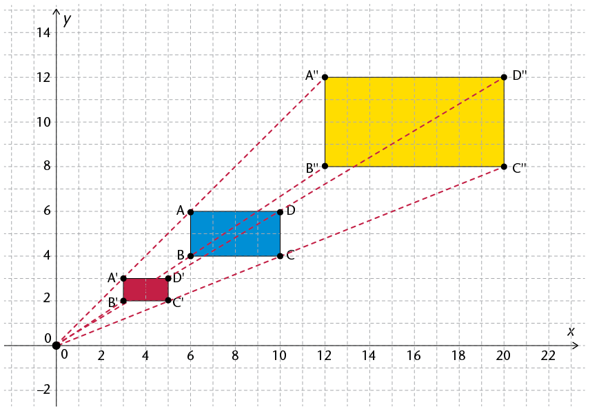</span> </p>

    <p xmlns="http://www.w3.org/1999/xhtml" class="ques-a-">1. (a) Is reghoek
 A''B''C''D''  ʼn vergroting van reghoek ABCD? Verduidelik jou antwoord.
 </p><hr xmlns="http://www.w3.org/1999/xhtml"/><p xmlns="http://www.w3.org/1999/xhtml" class="ques-a-">(b) Is reghoek A'B'C'D' ʼn verkleining van reghoek ABCD? Verduidelik jou antwoord.
</p><hr xmlns="http://www.w3.org/1999/xhtml"/><p xmlns="http://www.w3.org/1999/xhtml" class="ques-a-">2. (a) Die oorsprong is die senter van vergroting en verkleining. Teken vier lynstukke 		
	
om A", B", C" en D" met die oorsprong te verbind.
</p>

    <p xmlns="http://www.w3.org/1999/xhtml" class="ques-a-">(b) Wat merk jy op van hierdie lynstukke?
</p><hr xmlns="http://www.w3.org/1999/xhtml"/><p xmlns="http://www.w3.org/1999/xhtml" class="ques-a-">3. (a) Voltooi die tabel deur ʼn lys van die koördinate van die beelde op te stel.
</p>

    <table xmlns="http://www.w3.org/1999/xhtml" id="table-106" class="No-Table-Style table-style-override-1"><tbody><tr class="Row-Column-314"><td class="cell-style-override-2">
            <p class="Table-header-centred"><b>Hoekpunte van ABCD
</b></p>
          </td>

          <td class="cell-style-override-2">
            <p class="Table-header-centred"><b>Hoekpunte van A'B'C'D'
</b></p>
          </td>

          <td class="cell-style-override-2">
            <p class="Table-header-centred"><b>Hoekpunte van
A" B" C" D" </b></p>
          </td>
        </tr><tr class="Row-Column-314"><td class="cell-style-override-2">
            <p class="Table-text-left">A(6; 6)</p>
          </td>

          <td class="cell-style-override-2">
            
          </td>

          <td class="cell-style-override-2">
            
          </td>
        </tr><tr class="Row-Column-314"><td class="cell-style-override-2">
            <p class="Table-text-left">B(6; 4)</p>
          </td>

          <td class="cell-style-override-2">
            
          </td>

          <td class="cell-style-override-2">
            
          </td>
        </tr><tr class="Row-Column-314"><td class="cell-style-override-2">
            <p class="Table-text-left">C(10; 4)</p>
          </td>

          <td class="cell-style-override-2">
            
          </td>

          <td class="cell-style-override-2">
            
          </td>
        </tr><tr class="Row-Column-314"><td class="cell-style-override-2">
            <p class="Table-text-left">D(10; 6)</p>
          </td>

          <td class="cell-style-override-2">
            
          </td>

          <td class="cell-style-override-2">
            
          </td>
        </tr></tbody></table><p xmlns="http://www.w3.org/1999/xhtml" class="ques-a-">(b) Wat merk jy op van die koördinate van die oorspronklike reghoek se hoekpunte 	
	
en die koördinate van die beelde se hoekpunte?
 </p><hr xmlns="http://www.w3.org/1999/xhtml"/><p xmlns="http://www.w3.org/1999/xhtml" class="Body-no-indent">Die volgende behoort uit die vorige aktiwiteit duidelik te wees:
</p>

    <div xmlns="http://www.w3.org/1999/xhtml" class="note">
      <p class="Body-content-no-indent">Die lyn wat die senter van vergroting of verkleining
op ʼn koördinaatstelsel met die hoekpunte van die
oorspronklike figuur verbind, gaan ook deur die
ooreenstemmende hoekpunte van die vergrote of
verkleinde beeld.
</p>
      <p>Die koördinate van ʼn hoekpunt van die vergrote
of verkleinde beeld is gelyk aan die skaalfaktor
 \(\times\) die koördinate van die ooreenstemmende hoek-punt van die oorsponklike figuur.

</p>
    </div>

    <p xmlns="http://www.w3.org/1999/xhtml" class="Body">Byvoorbeeld:
</p>

    <p xmlns="http://www.w3.org/1999/xhtml" class="Body">B(6; 4) → B' (3; 2): Die koördinate van B' is
 \(\frac{1}{2}\) keer die koördinate van B. Let daarop dat die skaalfaktor

 \(\frac{1}{2}\) is.</p>

    <p xmlns="http://www.w3.org/1999/xhtml" class="Body">B(6; 4) → B'' (12; 8): Die koördinate van
 B'' keer die koördinate van B. Let daarop dat
die skaalfaktor 2 is.
</p>

    <p xmlns="http://www.w3.org/1999/xhtml" class="Body"> Oor die algemeen gebruik ons dus die volgende notasie om die vergroting en verklein-
ing met betrekking tot die oorsprong te beskryf:
</p>

    <div xmlns="http://www.w3.org/1999/xhtml" class="note">
      <p class="Body-content-no-indent">\((x; y )~ → ~(kx; ky)\) of \((x'; y') = (kx; ky)\) waar
 \(k\) die
skaalfaktor is.</p>
      <p>As 0 &lt; k &lt; 1, is die beeld ʼn verkleining
 </p>
      <p>As k &gt; 1, is die beeld ʼn vergroting.
 </p>
    </div>

    <h3 xmlns="http://www.w3.org/1999/xhtml" class="Head-investigation">Oefen</h3>

    <p xmlns="http://www.w3.org/1999/xhtml" class="Body-investigation-hanging">1. Teken die vergrote of verkleinde beelde van die volgende figure volgens die gegewe
skaalfaktor. Gebruik telkens die
 <b>oorsprong
</b> as die senter van vergroting of
verkleining.
</p>

    <p xmlns="http://www.w3.org/1999/xhtml" class="ques-a-">(a) Skaalfakto
 = 2</p>

    <p xmlns="http://www.w3.org/1999/xhtml" class="ques-a-"><span>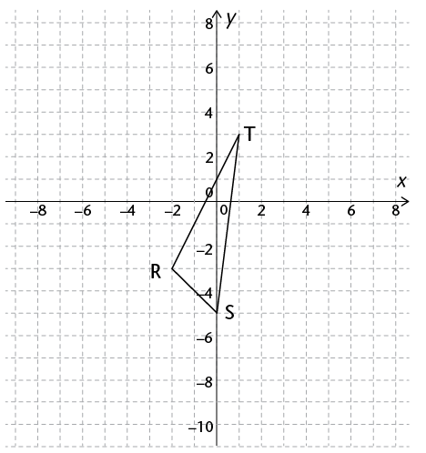</span> </p>

    <p xmlns="http://www.w3.org/1999/xhtml" class="ques-a-">(b) Skaalfakto
 \(= \frac{1}{2}\)</p>

    <p xmlns="http://www.w3.org/1999/xhtml" class="ques-a-"><span class="x2nd-level-bullet"><span>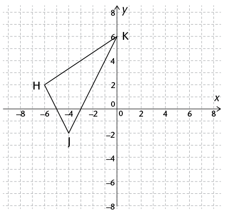</span></span></p>

    <p xmlns="http://www.w3.org/1999/xhtml" class="ques-a-">(c) Skaalfakto
 \(= \frac{1}{2}\)</p>

    <p xmlns="http://www.w3.org/1999/xhtml" class="Normal para-style-override-48"><span>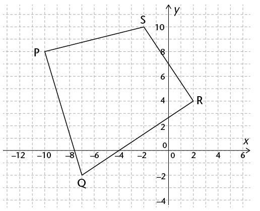</span> </p>

    <p xmlns="http://www.w3.org/1999/xhtml" class="ques-a-">(d) Skaalfakto
 \(= \frac{1}{3}\)</p>

    <p xmlns="http://www.w3.org/1999/xhtml" class="Body-investigation"><span>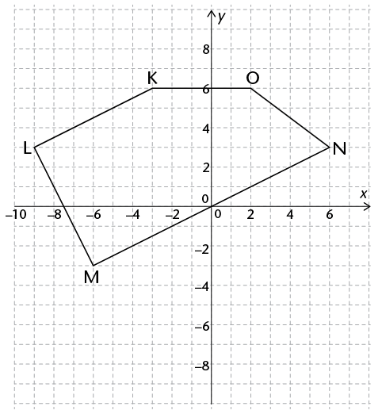</span> </p>

    <p xmlns="http://www.w3.org/1999/xhtml" class="Body-investigation-hanging">2. ʼn Vierhoek het die volgende hoekpunte:
 A(-2; 4), B(-4; -2), C(4; -3) en
 D(2;
    1).Bepaal die koördinate van die vergrote beeld as die skaalfaktor
 = 2. </p><hr xmlns="http://www.w3.org/1999/xhtml"/><p xmlns="http://www.w3.org/1999/xhtml" class="Body-investigation-hanging">3. ʼn Vierhoek het die volgende hoekpunte:
 P(-4; 0), Q(2,5; 4,5), R(6; -2,25) en

    S(2; -4). Bepaal die koördinate van die vergrote beeld as die skaalfaktor
 = 4. </p><hr xmlns="http://www.w3.org/1999/xhtml"/><p xmlns="http://www.w3.org/1999/xhtml" class="Body-investigation-hanging">4. ʼn Vierhoek het die volgende hoekpunte:
  D(6; -4 ), E(4; -6), F(-4; 2) en
 G(-2;
    -2). Bepaal die koördinate van die verkleinde beeld as die skaalfaktor
 \(= \frac{1}{2}\). </p><hr xmlns="http://www.w3.org/1999/xhtml"/><p xmlns="http://www.w3.org/1999/xhtml" class="Body-investigation-hanging">5. ʼn Vierhoek het die volgende hoekpunte: 
 K(8; -2), L(4; -6), M(-8; -4) en
 N(-6;
    10). Bepaal die koördinate van die verkleinde beeld as die skaalfaktor
 \(= \frac{1}{4}\).</p>

    <p xmlns="http://www.w3.org/1999/xhtml" class="Body-investigation">6. Beskryf die volgende transformasies
</p>

    <p xmlns="http://www.w3.org/1999/xhtml" class="ques-a-">(a) A(7; -5) →
    A'(9; 0) </p><hr xmlns="http://www.w3.org/1999/xhtml"/><p xmlns="http://www.w3.org/1999/xhtml" class="ques-a-">(b) A(-4; 6) →
    A'(4; 6) </p><hr xmlns="http://www.w3.org/1999/xhtml"/><p xmlns="http://www.w3.org/1999/xhtml" class="ques-a-">(c) A(-3; -2) →
    A'(-2; -3) </p><hr xmlns="http://www.w3.org/1999/xhtml"/><p xmlns="http://www.w3.org/1999/xhtml" class="ques-a-">(d) A(8; 1) →
    A'(8; -1) </p><hr xmlns="http://www.w3.org/1999/xhtml"/><p xmlns="http://www.w3.org/1999/xhtml" class="ques-a-">(e) A(4; -2) →
    A'(8; -4) </p><hr xmlns="http://www.w3.org/1999/xhtml"/><p xmlns="http://www.w3.org/1999/xhtml" class="ques-a-">(f) A(12; -16) →
    A'(3; -4) </p><hr xmlns="http://www.w3.org/1999/xhtml"/><p xmlns="http://www.w3.org/1999/xhtml" class="ques-a-">(g) A(2; -1) →
    A'(-3; -5) </p><hr xmlns="http://www.w3.org/1999/xhtml"/><p xmlns="http://www.w3.org/1999/xhtml" class="Body-investigation">7. Beskryf elk van die volgende transformasies.
</p>

    <p xmlns="http://www.w3.org/1999/xhtml" class="ques-a-"> (a)</p>
        <div xmlns="http://www.w3.org/1999/xhtml" class="frame-23">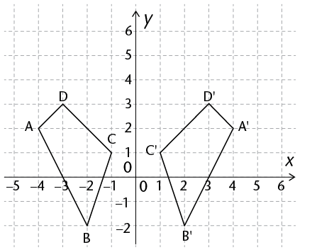</div>
    <p xmlns="http://www.w3.org/1999/xhtml"> (b) </p>


    <div xmlns="http://www.w3.org/1999/xhtml" class="frame-23">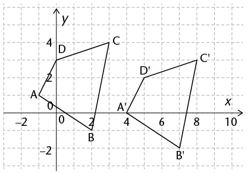</div>
    
  </div>
</div>